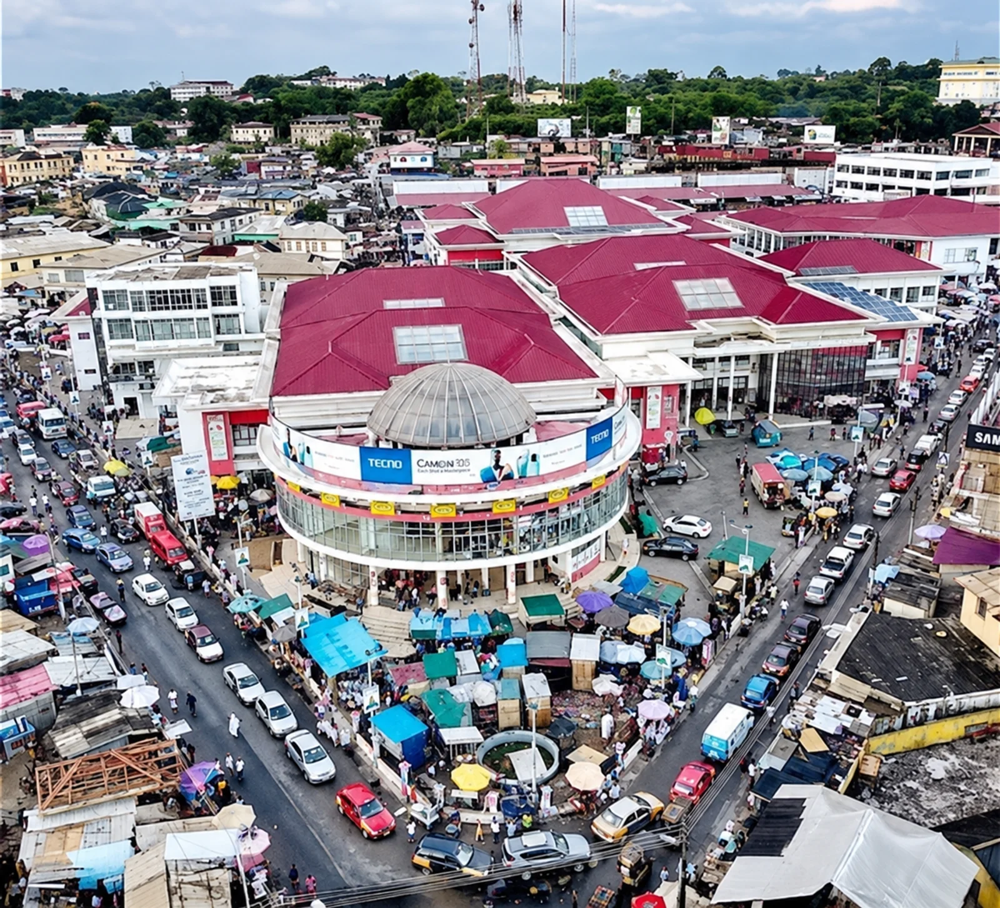
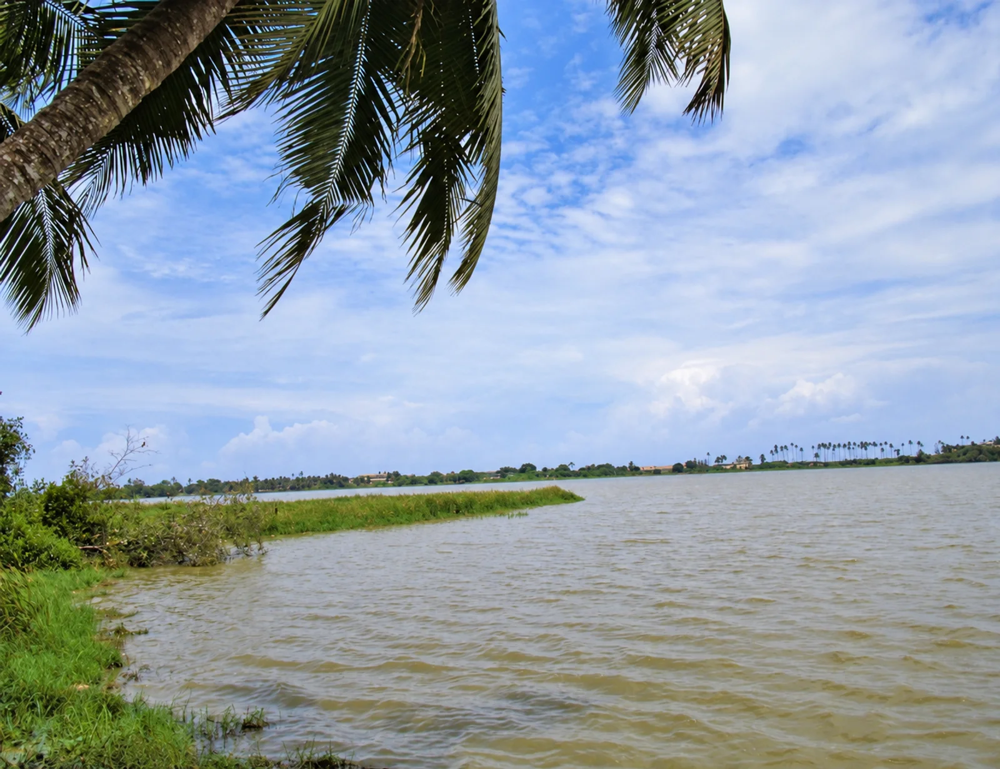

Photo supplied by the site owner; color and brightness refined.
Heritage
Cape Coast Castle & Museum
Castle tours and museum exhibitions exploring the transatlantic slave trade. The museum is part of the castle visit.
Explore this place ↗Cape Coast, Ghana
Explore heritage, everyday culture and the coast. Build your visit, with proposed pickup and return within Cape Coast.
Start in Cape CoastPickup at an agreed city meeting point.
Choose more than one stopBuild a visit around your interests.
Return to your pickup pointTiming and transport confirmed before commitment.
From a castle that holds history to a market alive with everyday life. Start with these Cape Coast places.
Photo supplied by the site owner; color and brightness refined.
Heritage
Castle tours and museum exhibitions exploring the transatlantic slave trade. The museum is part of the castle visit.
Explore this place ↗
Culture & everyday life
Explore local trading, produce, and everyday life in Cape Coast’s central market.
Explore this place ↗
Photo supplied by the site owner; color and brightness refined.
Nature & coast
Coastal lagoon with cultural and ecological significance. A potential scenic stop; no boat activities are promised.
Explore this place ↗Browse city attractions and read access notes before choosing your stops.
Add a preferred date, group size and pickup point within Cape Coast.
Check your plan. Availability, a quote and payment must be connected before booking is possible.
Your Cape Coast, your way
Choose the places you want to see. Add your preferred date and pickup point, then review your proposed visit.
This preview saves your details in this browser session. It does not send a request or reserve a visit.
Agreed pickup within Cape Coast, transport to selected attractions, applicable admission handling under agreed venue arrangements, and return to your original pickup point. Meals, optional activities and guiding are not automatically included.
No. This is a planning preview. Requests are not sent, visits are not reserved, final prices are unconfirmed, and card payment is unavailable.
Nearby destinations are listed separately and require their own arrangements. They cannot be added to the initial Cape Coast city planner.
They stay in your current browser session. No booking service receives them. Location is requested only when you press the location button, and you can edit or clear your details.